1. Introduction
This post belongs to a new series of posts related to a huge and popular topic in machine learning: fully connected neural networks.
The general series scope is three-fold:
- visualize the model features and characteristics with schematic pictures and charts
- learn to implement the model with different levels of abstraction, given by the framework used
- have some fun with one of the hottest topics right now!
In the following posts, we are going to analyze toy examples with advanced deep-learning libraries, namely Scikit-learn, Keras, Tensorflow and Pytorch.
We are going through the following steps in each post:
- initialization
- create a dataset for three different applications: regression, binary- and multi-classification
- visualize point, mesh
- define network: dense layer, activation function and stack of layers
- train: loss and accuracy functions, optimizer and learning process
- visualize prediction
Point 4 implies to create a layer class with corresponding weights and biases that need to be learned during train step. The layer class is required for Tensorflow only and its structure is pretty simple:
- initialization
- forward pass
How neural networks learn basic features, such as the product of two numbers, some logic functions as AND or OR, and the geometric boundaries between concentric circles of different radius?
To answer this question, we create 12 different types of dataset, 3 for regression, 6 for binary-classification and, 3 for multi-class classification.
This post goes through this process. I know, you might think it is neither strictly related to neural networks nor to their fancy libraries. We will spend some time on that too, do not worry.
Analyzing the data we are going to feed the neural network with is crucial for us to have a deeper understanding of the whole phenomenon.
The whole code to create a synthetic dataset and learn a neural network model with any of the four libraries mentioned above is wrapped into a Python class, trainFCNN(), and can be found in my Github repo.
2. Importing
First of all, we need to install these two libraries with the pip command and to import them.
$ pip install numpy matplotlib
import numpy as np
%matplotlib inline
import matplotlib.pyplot as plt
3. General dataset structure
We now build a class with an attribute that specifies which dataset we want to analyze and, with respect to that, which kind of problem we want to solve, whether it is a regression or a binary classification or a multi-object classification.
We create two functions to visualize 1) the generated scattered dataset points and 2) a 2D grid of points (contour plot) so that we can really understand the behaviour of the model at the end of the learning process across the entire domain. Just to make everything easier to be visualized into a 2D space, we create a fictitious dataset for only two inputs.
We also specify the library that we want to use to solve the problem.
We need to build a function that implements the core concept for deep learning (see the training function in the code).
Within this function, we can define the main hyperparameters for the model structure and learning process and the library to learn the optimal model for the user-selected dataset.
We are going to realize that Scikit-learn and Keras are quite similar.
They share the concert that we first define the model and then we optimize it using fit method with respect to the input X and output Y, coming from the dataset.
Tensorflow instead is a bit lower level and so we have to first build the model using basic mathematical operations, such as matrix multiplication matmul, element-wise activation function sigmoid, and then the learning process that executes the forward and backward passes in a for loop.
The entire process results to be a bit more verbose.
In the end, we are going to run the plotModelEstimate function that compares the model output (prediction) for every grid point of the 2D meshgrid to the dataset points used to train the model.
In this way, we can see where the model is predicting the output correctly with respect to the actual points.
Finally, we just save the loss history for every specific case and at the end compare each of those within the same plot to understand the learning behaviour.
For instance, which case is going to be stuck to a given loss level and which case is going to converge to the optimal solution, which hyperparameters are key to converge faster or to get rid of some local optimum.
Let’s get started! We are going to analyze the main code snippets of the entire class, step by step, and at the end to show how we can use that class to compare different cases and to analyze the main differences between the four libraries.
You can find here the entire code for the class.
The first step is to define the dataset. We create the X array, which is basically a two-dimensional array with as many rows as the number of points nb_pnt that we want to create and one column per dimension (2 in this toy examples).
Both inputs $x_1$ and $x_2$ range from -scale to scale, where scale is something that we can control at the initialization setting.
We use the groundTruth function to generate the response variable Y from X.
We have a huge if statement block to create the corresponding response variable with respect to the dataset chosen by the user.
For every case, we are going to show the equation and the code that we need to use to generate the Y variable and also called the plotPoints function to visualize the dataset structure.
Just make sure that you see two colors only for a binary classification (a red point belongs to class 0, a blue point to class 1), as many colours as the number of classes for a multi-classification problem and a continuous range of colours for a regression problem, since the response Y is going to continuously change across the entire domain.
4. Binary classification
4.1 AND
In the first case, we have the code to generate the and behaviour.
We just take x1 and x2, use the sign of both inputs and apply the and operator and convert it to an integer, either 0 or 1.
We cannot apply the and operator to the raw inputs since they are real (float).
We convert the output to an integer that can be fed to the deep-learning libraries.
Whatever point is lying in the first quadrant is associated to the response equal to 1, which is the integer value for True, and every other possible combination of x1 and x2 to 0 (False).
$$ Y = (x_1>0) \And (x_2>0) $$
YY = ((x1>0) & (x2>0)).astype(int).reshape(-1, 1)
tnn = trainFCNN(dataset='and', nb_pnt=2500).plotPoints()
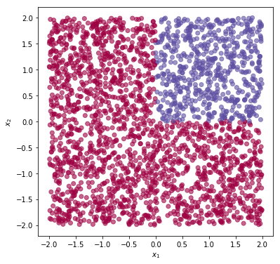
4.2 OR
Similarly, if we select the or dataset we are going to simulate or behaviour.
tnn = trainFCNN(dataset='or', nb_pnt=2500).plotPoints()
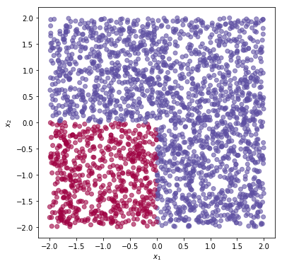
4.3 XOR
Here we define the xor case (whose mathematical symbol is $\oplus$) by taking the product of the two input’s features and assign it to class 1 if the product is greater than 0 and to class 0 otherwise.
$$ Y = (x_1>0) \oplus (x_2>0) $$
YY = ((x1*x2>0)).astype(int).reshape(-1, 1)
tnn = trainFCNN(dataset='xor', nb_pnt=2500).plotPoints()
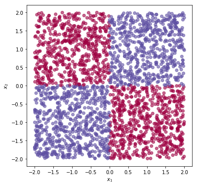
4.4 Stripe
Another case of binary classification is the stripe case, where we define a linear region where the absolute difference of x1 and x2 is less than or equal to 1.
Any point between the two lines $x_2 = x_1 + 1$ and $x_2 = x_1 - 1$ belongs to class 1, everything else outside the stripe to class 0.
$$ Y = |x_1-x_2| \le 1 $$
YY = (np.abs(x1-x2)<=1).astype(int).reshape(-1, 1)
tnn = trainFCNN(dataset='stripe', nb_pnt=2500).plotPoints()
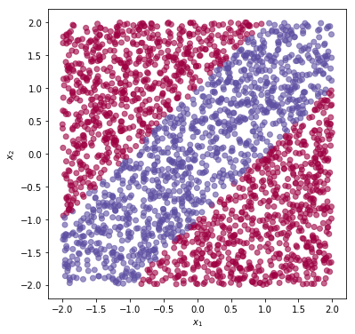
4.5 Square
The square case is generated by using the Manhattan distance definition (just take the sum of the absolute values of both x1 and x2) and constrain this sum to be less than or equal to 1 to assign points to class 1, otherwise to class 0.
$$ Y = |x_1|+|x_2| \le 1 $$
YY = ((np.abs(x1)+np.abs(x2))<=1).astype(int).reshape(-1, 1)
tnn = trainFCNN(dataset='square', nb_pnt=2500).plotPoints()
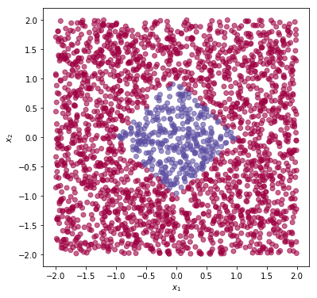
4.6 Circle
The circle case is generated by using the Euclidean distance definition (just take the sum of the squares of both x1 and x2) and constrain this sum to be less than or equal to 1 to assign points to class 1, otherwise to class 0.
$$ Y = x_1^2+x_2^2 \le 1 $$
YY = ((x1**2+x2**2)<=1).astype(int).reshape(-1, 1)
tnn = trainFCNN(dataset='circle', nb_pnt=2500).plotPoints()
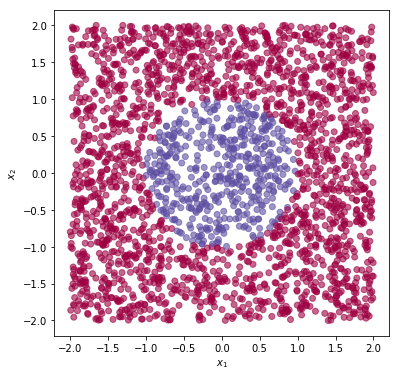
5. Multi-object classification
We go to the three cases for multi-class problems.
5.1 Squares
We take the Manhattan distance between the two points and we convert that into an integer, which is going to be the class.
Since x1 and x2 range from $-2$ to $+2$ if scale=2, the maximum Manhattan distance is $4$, which gives five distinct classes from 0 to 4.
$$ Y = |x_1| + |x_2| $$
YY = ((np.abs(x1)+np.abs(x2))).astype(int).reshape(-1, 1)
tnn = trainFCNN(dataset='squares', nb_pnt=2500).plotPoints()
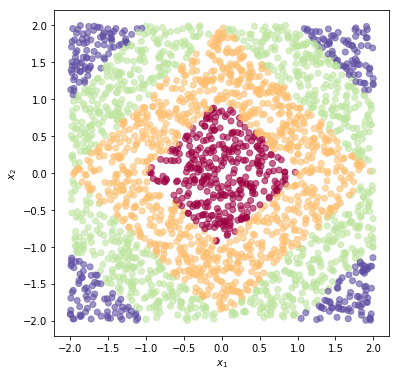
5.2 Circles
We take the Euclidean distance between the two points, divide by 2 to prevent having a huge number of classes and convert that into an integer, which is going to be the class.
Since x1 and x2 range from $-2$ to $+2$ if scale=2, the maximum distance is $(4+4)/2$, which gives five distinct classes from 0 to 4.
$$ Y = \frac{1}{2}\cdot(x_1^2 + x_2^2) $$
YY = ((x1**2+x2**2)/2).astype(int).reshape(-1, 1)
tnn = trainFCNN(dataset='circles', nb_pnt=2500).plotPoints()
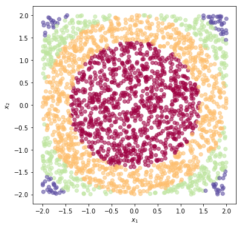
5.3 Quadrants
In the last case, we split the 2D space into 4 quadrants, where the bottom-left quadrant belongs to the first class and the remaining three are numbered counter-clockwise.
the Euclidean distance of the two points, divide by 2 to prevent having a huge number of classes and convert that into an integer, which is going to be the class.
We calculate the angle that any point with coordinates x1 and x2 creates with the horizontal axis by means of arctan2 function from Numpy, divided by $\pi/2$ to shrink the $(-\pi, \pi)$ range down to $[0, 4)$ and convert it to an integer.
$$ Y = \frac{2}{\pi}\cdot\arctan\frac{x_2}{x_1} + 2 $$
YY = (2*(np.arctan2(x2, x1)/np.pi+1)).astype(int).reshape(-1, 1)
tnn = trainFCNN(dataset='quadrants', nb_pnt=2500).plotPoints()
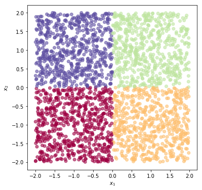
6. Regression
We go to the three cases for regression problems: prod, sumSquares and polynom.
6.1 Product
The first case is the product of two inputs x1 and x2, as:
$$ Y = \frac{1}{4}\cdot x_1\cdot x_2 $$
YY = ((x1*x2)/4).reshape(-1, 1)
tnn = trainFCNN(dataset='prod', nb_pnt=2500).plotPoints()
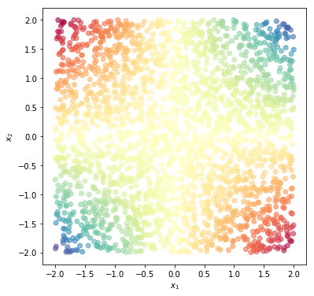
6.2 Sum of squares
The second case is the sum of squares of two inputs x1 and x2, as:
$$ Y = \frac{1}{4}\cdot (x_1^2 + x_2^2) $$
It has the same behaviour that we can get from circle from binary classification, but we are not going to convert the output into an integer, thus the network has to learn how to capture the continuous behaviour that is typical of a regression problem.
YY = ((x1**2+x2**2)/4).reshape(-1, 1)
tnn = trainFCNN(dataset='sumSquares', nb_pnt=2500).plotPoints()
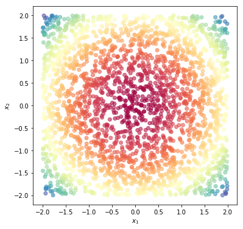
6.3 Polynomial function
The final case is a polynomial function. We have two square terms for x1 and x2 and a mix term, i.e., the product of the two inputs, as:
$$ Y = \frac{1}{4}\cdot \big(x_1^2 -3\cdot x_1\cdot x_2 - x_2^2 \big) $$
YY = ((x1**2-3*x1*x2-x2**2)/4).reshape(-1, 1)
tnn = trainFCNN(dataset='polynom', nb_pnt=2500).plotPoints()
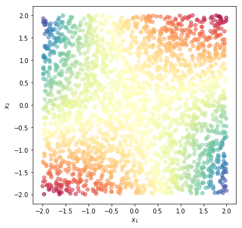
7. Problem type from selected dataset
With respect to the dataset that the user is going to select, the function also assigns the corresponding type of problem to solve. Below is the code snippet to differentiate the tree cases
if self.dataset in ['prod', 'sumSquares', 'polynom']:
self.kind = 'regr'
elif self.dataset in ['squares', 'circles', 'quadrants']:
self.kind = 'multiCls'
elif self.dataset in ['and', 'or', 'xor', 'stripe', 'square', 'circle']:
self.kind = 'binCls'
Usually, we need to pre-process our dataset before feeding it into deep learning model itself.
Pre-processing means that we need to scale and split dataset to train and test sets.
If we have a classification problem and the model response variable y is represented using different labels for different classes, like a dog-cat for binary or tiger-leopard-jaguar-panther-lion for multi-class, we also need to make sure that this labelling encoding is converted into a class or integer representation or eventually an one-hot encoding representation.
However, in this case, we don’t scale because the input is already somehow scaled and also there is no sketching of any dimensions, i.e, x1 and x2 range within the same interval.
We do not split the dataset into training and test sets, because we’re just exploring this toy examples and really understand what a neural network can learn.
We are finally going to investigate some extensions such as regularization and overfitting in future steps. Right now we just want to understand whether a given network structure is able to learn a given problem.
Finally, there is no need to use a label encoder, such as LabelEncoder from Sklearn, because we already have the response variable for a multi-class problem encoded as an integer.
The only thing that we need to do in this case is to take this encoding representation and converted to one-hot encoding representation, which is the proper structure for either Keras and Tensorflow.
In any case, whenever we need to scale because there are different inputs ranging across completely different intervals, or we need to train the model and evaluate it on the test set, or we need to transform labels into integer representation, we can easily perform such tasks using pre-defined functions in Sklearn and there is plenty of material about preprocessing, such as this post, this one and that one.
Now we need to define the network itself so we are going to learn how we can build the network with respect to the three different libraries and basically how we can create the dense layer and apply an activation function on top of that and then how to stack as many layers as the user defines within the train function attributes.